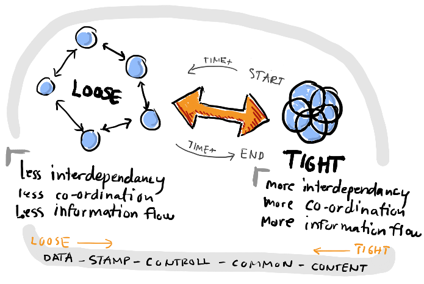

Coupling and Cohesion
Coupling: level or degree of interdependencies between software modules. A small level of coupling is necessary components can leverage other components capabilities, so coupling not is a bad thing. But high degree of coupling will make the software more complex and less maintainable.
Something to always keep in mind when developing software components is that we should prefer to program to the/an interface, this technic will help us to achieve a good level of coupling when doing the right way. (1)
So having a loose coupling will benefits us with:
- extends our components and add more capabilities will be easier
- replacing and deprecating components will be easier too
- and the technic of programming to the interface will encourage thinking in terms of business concepts
Cohesion: level or degree to which the elements inside the module belong together. How well a module’s components fits together. How all components work together to single purpose (2).
Cohesion is not a binary value there are cohesion categories (3) and we can get as “sophisticated” about this non-functional requirement that we can measure method’s cohesion (4).
For the purpose of this material we will focus only on functional cohesion: a module’s component should have only one responsibility. Keep in mind that a good component will be small and focused.
So, we should strive to a high level of cohesion in order to:
- increase clarity and ease comprehension of our module’s components
- enhance maintainability and extensibility, since we will have small and focused components changes should affect fewer parts
- promote loose coupling
Do not get confused, the above could sound important only when developing module’s components but it is more important when talking bout completely separate components i.e. services in a system, due to changing and interface will be much harder due to the fact that such and interface could be used by external client/components.
So, when introducing a new service to our micro-services architecture it’s vital to make sure that:
- our new service is highly cohesive by having just one responsibility
- our new service won’t expose any implementation details
- and, that it will provide a clean interface so that its client will be loosely coupled to it
